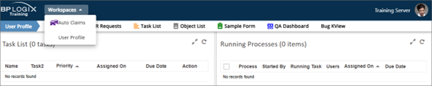
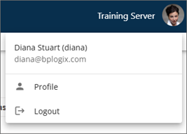
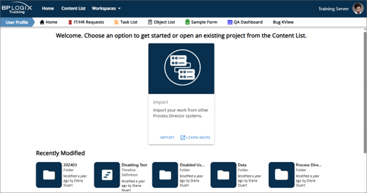
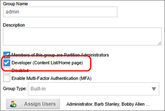
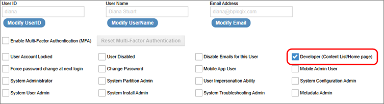
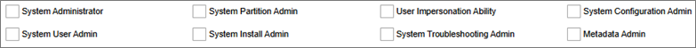

Prior versions of Process Director had two major levels of access to the UI. System Administrators, or partial administrators, had access to all or part of the IT Admin area. All other users, including implementers, had access to the same end user UI. Access to the Content List for implementers usually required the creation of a developer or implementer workspace, which gave them access to it.
With the v6.1 UI, an additional access level was added for implementers, to provide more granular control over who can access the Content List. This new level is called Developer access, which enables access to the Content List and Home Page without assigning additional administrative privileges (such as making implementers Partition Admins) or permissions. So, for Process Director v6.1.X and higher, UI Access is granted to the following user classes:
By default, all users are given end user access to the system, which enables them to access only the workspaces to which they’ve been assigned. Without specific configuration to provide additional access to other portions of the UI, all users, by default, see only the simplest version of it.

End users have access to their workspaces, but they cannot see the Home Page, the Content List, or access any of the administrative portions of the UI. Additionally, the contents of the User Profile menu are also limited.

The same user, however, if granted Developer Access, can see a more expanded set of menus.

With Developer Access the same user now has access to the Home Page, as well as the full Content List, though this access can be limited by permissions to see or modify specific folders or objects.
Of course, Administrators have access to the entire UI.
Granting Developer access can be done in two different ways, by group, or by individual user. BP Logix recommends that access be granted by group, since this is the easiest way to administer access over time.
A new property exists on the Edit Group page to grant Developer Access to all members of a specified Group. This property is labeled Developer (Content List/Home Page).

When checked, this property gives access to the Home Page and Content List to all group members. As group members are added to, or removed from, this group, their access to the developer content will update automatically.
Developer access can also be granted via the Edit User page in the User Administration area. The same property, Developer (Content List/Home Page), is available for each user.

This property works just like its Group counterpart but requires that you manage Developer access at the individual level, which, over time, can be an additional administrative burden when compared to Group-level management.
Granting Developer access does not change the user’s object permissions in the Content List or otherwise elevate the user’s system privileges. The objects they can access in the Content List are still limited by the permissions on each object. This enables you to grant different implementers access to different portions of the Content List.
You may also wish to grant the user additional privileges, such as the ability to impersonate other users. This is a separate privilege that can be granted by checking the User Impersonation Ability property for the user account. Users with impersonation ability can access that feature directly from the User Profile menu.
Just as with administrators, users with Developer access can open their User Profile to select whether they wish to see the Home Page, or their active Workspace when logging into the system.
Administrators have access to all or part of the Settings menu in the UI. The process of designating administrators has not changed. The various levels of administrative access are still controlled at the user level, by selecting the appropriate property to grant privileges in the user's account page in the User Administration section of the IT Admin area.

Once exception to administrative access, however, is if a user is granted System Partition Admin privileges only. In that case, theuser will see the same UI as those users who’ve been given Developer access. But, unlike users with Developer Access, System Partition Administrators have full control over the Content List for any partition of which they are a member. They are not limited in any way by object permissions and can make any change they desire to any Content List object. While they cannot access the Settings menu, or any portion of the IT Admin area, they do have full administrative control over the Content List.
The remaining administrative settings will grant access to the Settings menu, and any of the menu items that are relevant to their level of administrative access.